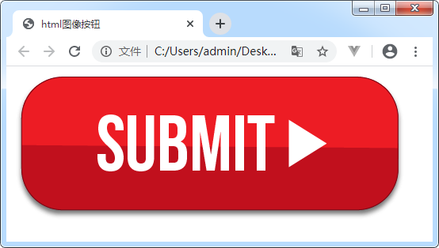
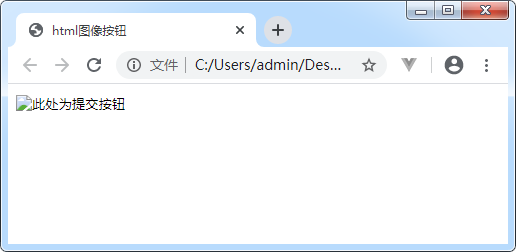
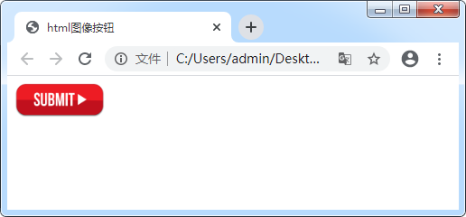
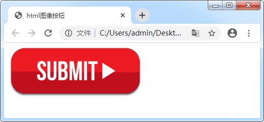

首页 > 编程笔记
HTML图像按钮
在上一节《HTML按钮》中，我们学习了三种按钮，普通按钮、提交按钮以及重置按钮。可能很多读者会觉得它们的样式不太美观，这时我们可以使用图像来替代按钮中的文本，从而使页面变得更加美观。
在 HTML 中，把 <input> 标签的 type 属性设置为 image 可以表示图像按钮。具体语法格式如下：
图片的路径可以是相对路径，也可以是绝对路径。具体使用方法请参考《绝对路径和相对路径》一文。
示例如下：
当我们点击图片按钮后，表单中的相应内容会提交。
代码如下：
接下来我们看一下怎样设置图片按钮的大小。
与图 1 进行对比发现，图片的宽度和高度都发生了变化，那是因为图片随设置好的宽度进行了自适应。
通过运行结果发现，图片的宽度也随其高度发生了变化。一般情况下，我们只需设置图片的宽度（width）或者是高度（height）即可，否则有的图片可能会失帧。
在 HTML 中，把 <input> 标签的 type 属性设置为 image 可以表示图像按钮。具体语法格式如下：
<input type="image" src="url" />
我们还可以把图像按钮分为图像、按钮两部分来看，因为它既有图像的特点（需要使用src属性为图片添加路径），又有按钮的特点（图像按钮的行为基本上与提交按钮一致，点击它也可以实现表单数据的提交）。图片的路径可以是相对路径，也可以是绝对路径。具体使用方法请参考《绝对路径和相对路径》一文。
示例如下：
<form action="http://vip.biancheng.net/login.php" method="post">
<input type="image"
src="https://ss0.bdstatic.com/70cFuHSh_Q1YnxGkpoWK1HF6hhy/it/u=1789448540,836075780&fm=26&gp=0.jpg"/>
</form>
运行结果如图所示：

图1：HTML 图片按钮
图1：HTML 图片按钮
当我们点击图片按钮后，表单中的相应内容会提交。
1. 图像按钮属性
同 <img> 标签一样，图像按钮也有 alt 属性：
1) alt属性
alt 属性用来对图像进行文本说明。一般情况下，当浏览器因某种原因无法载入图像时，就会显示这段文本。虽然 alt 属性值可以为空，但还是建议读者给 alt 属性设置符合图像信息的文本。代码如下：
<form action="http://vip.biancheng.net/login.php" method="post">
<input type="image"
src="https://ss0.bdstatic.com/70cFuHSh_Q1YnxGkpoWK1HF6hhy/it/u=1789448540,836075780&fm=26&gp=0.jpg"
alt="此处为提交按钮"
/>
</form>
当网络出现问题时，运行结果如图所示：

图2：HTML 图片按钮
图2：HTML 图片按钮
接下来我们看一下怎样设置图片按钮的大小。
2) width属性
width 属性表示图片的宽度，默认单位是 px，不需要显示指明。使用方法如下：
<form action="http://vip.biancheng.net/login.php" method="post">
<input type="image"
src="https://ss0.bdstatic.com/70cFuHSh_Q1YnxGkpoWK1HF6hhy/it/u=1789448540,836075780&fm=26&gp=0.jpg"
alt="此处为提交按钮"
width="100"
/>
</form>
运行结果如图所示：

图3：设置了宽度的图片按钮
图3：设置了宽度的图片按钮
与图 1 进行对比发现，图片的宽度和高度都发生了变化，那是因为图片随设置好的宽度进行了自适应。
3) height属性
height 属性表示图片的高度，同 width 属性一样，默认单位也是 px，不需要显示指明。具体代码如下：
<form action="http://vip.biancheng.net/login.php" method="post">
<input type="image"
src="https://ss0.bdstatic.com/70cFuHSh_Q1YnxGkpoWK1HF6hhy/it/u=1789448540,836075780&fm=26&gp=0.jpg"
alt="此处为提交按钮"
height="100"
/>
</form>
运行结果如图所示：

图4：设置了高度的图片按钮
图4：设置了高度的图片按钮
通过运行结果发现，图片的宽度也随其高度发生了变化。一般情况下，我们只需设置图片的宽度（width）或者是高度（height）即可，否则有的图片可能会失帧。
上述所有样式，当我们学习了 css 后都可以轻松实现，此处只需了解即可。
关注公众号「站长严长生」，在手机上阅读所有教程，随时随地都能学习。内含一款搜索神器，免费下载全网书籍和视频。

微信扫码关注公众号